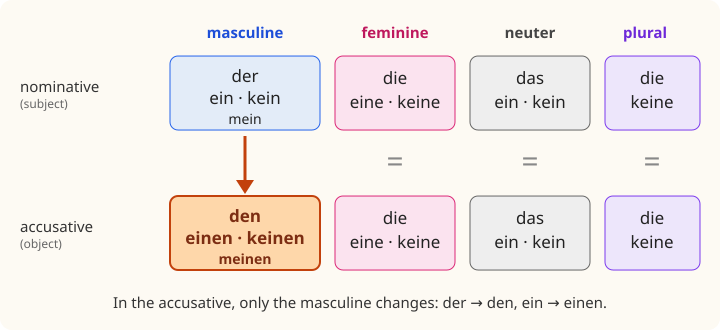

Lesson 8: The Accusative¶
Der Akkusativ
In Lesson 5 you met a puzzle: Das ist ein Bruder, but Ich habe einen Bruder. The difference is the case. In the first sentence ein Bruder is in the nominative, the case of the subject; in the second it is the direct object of the verb, the thing or person that is had, bought, seen or wanted, and the direct object is in the accusative case. The good news is that the accusative is easy: only one gender, the masculine, changes its form. In this lesson you learn the accusative of the articles and of the pronouns (me, you, him, her, us, them), the phrase es gibt, "there is, there are", the verb mögen, "to like", and the prepositions that are always followed by the accusative.
Learning outcomes
By the end of this lesson you will be able to:
- recognise the direct object of a sentence and put it in the accusative;
- use the accusative of der, ein, kein and the possessives: den, einen, keinen, meinen;
- use the accusative pronouns mich, dich, ihn, sie, es, uns, euch, sie, Sie;
- say what there is with es gibt;
- say what you like with mögen;
- use the prepositions für, ohne, durch, gegen, um;
- describe objects with adjectives and colours, and shop at a flea market.
masculinefeminineneuterplural
8.1 Dialogue: at the flea market¶
Emma needs a few things for her room. On Saturday morning, Jonas takes her to a flea market.
- Emma: Ich brauche einen Stuhl und eine Lampe für mein Zimmer. — I need a chair and a lamp for my room.
- Jonas: Kein Problem. Samstags gibt es hier einen Flohmarkt. Komm! — No problem. On Saturdays there's a flea market here. Come on!
- Verkäufer: Guten Tag! Suchen Sie etwas? — Hello! Are you looking for something?
- Emma: Ja, ich suche einen Stuhl. Haben Sie einen? — Yes, I'm looking for a chair. Do you have one?
- Verkäufer: Ja, hier. Wie finden Sie den Stuhl? Er ist alt, aber sehr bequem. — Yes, here. What do you think of the chair? It's old, but very comfortable.
- Emma: Hm, den finde ich ein bisschen hässlich. Was kostet der Stuhl da links? — Hmm, I find it a bit ugly. How much is the chair there on the left?
- Verkäufer: Der? Fünfzehn Euro. — That one? Fifteen euros.
- Emma: Fünfzehn Euro? Das ist zu teuer. Zehn? — Fifteen euros? That's too expensive. Ten?
- Verkäufer: Sagen wir zwölf. — Let's say twelve.
- Emma: Gut, ich nehme ihn. — Fine, I'll take it.
- Jonas: Emma, schau mal! Hier gibt es eine Lampe für fünf Euro. Ist sie nicht schön? — Emma, look! There's a lamp here for five euros. Isn't it nice?
- Emma: Doch, sie ist toll! Ich kaufe sie. Und du? Brauchst du nichts? — Yes, it's great! I'll buy it. And you? Don't you need anything?
- Jonas: Doch, ich suche ein Geschenk für meine Oma. Siehst du den Mann da? Er verkauft alte Bücher. — Yes, I'm looking for a present for my grandma. Do you see the man there? He's selling old books.
- Emma: Kennst du ihn? — Do you know him?
- Jonas: Nein, aber meine Oma mag Bücher. Komm, wir fragen ihn! — No, but my grandma likes books. Come on, let's ask him!
Notice:
- der Stuhl becomes den Stuhl and einen Stuhl when it is the object: Ich suche einen Stuhl. Wie finden Sie den Stuhl?
- The feminine and neuter do not change: eine Lampe, ein Geschenk, mein Zimmer.
- "It" for the chair is ihn, the accusative of er: Ich nehme ihn. For the lamp it is sie, which does not change.
- es gibt means "there is, there are": Hier gibt es eine Lampe.
- After für ("for") the accusative is used: für meine Oma.
8.2 Vocabulary: things, colours and verbs with objects¶
Verbs that take an object¶
| German | English |
|---|---|
| haben | to have |
| brauchen | to need |
| suchen | to look for |
| finden | to find; to think of |
| kaufen / verkaufen | to buy / to sell |
| nehmen (nimmt) | to take |
| sehen (sieht) | to see |
| kennen | to know (a person, a place) |
| mögen (mag) | to like |
| besuchen | to visit |
| bezahlen | to pay (for) |
| bekommen | to get, to receive (not "become"!) |
| fragen | to ask (someone) |
| lieben | to love |
| es gibt | there is, there are |
Table 8.1. Verbs with a direct object.
Describing things¶
| German | English | German | English |
|---|---|---|---|
| neu | new | alt | old |
| billig, günstig | cheap, good value | teuer | expensive |
| schön | beautiful, nice | hässlich | ugly |
| groß | big, tall | klein | small |
| bequem | comfortable | unbequem | uncomfortable |
| praktisch | practical, handy | kaputt | broken |
| modern | modern | altmodisch | old-fashioned |
| leicht | light; easy | schwer | heavy; difficult |
Table 8.2. Adjectives for things. After sein they have no ending: Der Stuhl ist bequem.
Colours¶
| German | English | German | English |
|---|---|---|---|
| rot | red | schwarz | black |
| blau | blue | weiß | white |
| grün | green | grau | grey |
| gelb | yellow | braun | brown |
| orange | orange | rosa | pink |
| lila | purple | bunt | colourful, multicoloured |
Table 8.3. Colours. Welche Farbe hat der Stuhl? – Er ist grün. (What colour is the chair? – It's green.)
At the flea market¶
| German | English |
|---|---|
| der Flohmarkt, die Flohmärkte | the flea market |
| der Verkäufer / die Verkäuferin | the seller |
| der Preis, die Preise | the price |
| das Geld | money |
| die Farbe, die Farben | the colour |
| die Vase | the vase |
| das Geschirr | crockery, dishes |
| das Fahrrad, die Fahrräder | the bicycle |
| der Teppich, die Teppiche | the rug, carpet |
| Was kostet …? / Wie viel kostet …? | How much is …? |
| Das ist zu teuer. | That's too expensive. |
| Ich nehme es. | I'll take it. |
| etwas / nichts | something / nothing |
| leider | unfortunately |
Table 8.4. Shopping at a flea market.
8.3 Grammar: the accusative case¶
The direct object¶
The direct object is the person or thing directly affected by the action of the verb: the thing you buy, the person you see, the present you look for. To find it, ask whom? (wen?) or what? (was?) after the verb and the subject:
- Emma kauft eine Lampe. What does Emma buy? eine Lampe: the direct object.
- Jonas sieht den Mann. Whom does Jonas see? den Mann: the direct object.
The subject is in the nominative; the direct object is in the accusative.
Only the masculine changes¶
Here is the whole table of articles in both cases. Compare the two rows of each kind of article: only the masculine column is different.
| Masculine | Feminine | Neuter | Plural | |
|---|---|---|---|---|
| nominative: the | der Stuhl | die Lampe | das Bild | die Bücher |
| accusative: the | den Stuhl | die Lampe | das Bild | die Bücher |
| nominative: a | ein Stuhl | eine Lampe | ein Bild | Bücher |
| accusative: a | einen Stuhl | eine Lampe | ein Bild | Bücher |
| nominative: no | kein Stuhl | keine Lampe | kein Bild | keine Bücher |
| accusative: no | keinen Stuhl | keine Lampe | kein Bild | keine Bücher |
| accusative: my | meinen Stuhl | meine Lampe | mein Bild | meine Bücher |
Table 8.5. Nominative and accusative. The masculine adds -en (der → den, ein → einen); everything else stays the same.

So the rule to remember is very short: in the accusative, masculine der becomes den, and ein, kein, mein, dein, Ihr add -en. Every other form is the same as the nominative.
- Der Tisch ist neu. → Ich kaufe den Tisch.
- Das ist ein Teppich. → Ich suche einen Teppich.
- Hier ist kein Spiegel. → Ich habe keinen Spiegel.
- Das ist mein Bruder. → Kennst du meinen Bruder?
The question words follow the same pattern: wer ("who", nominative) becomes wen ("whom", accusative): Wen besuchst du? ("Who are you visiting?"). was does not change. And welcher becomes welchen: Welchen Stuhl nimmst du?
Word order: the object can come first¶
Because the article shows which noun is the object, German can put the object in position 1, for emphasis, without changing the meaning. The verb still comes second:
- Ich finde den Stuhl hässlich. → Den Stuhl finde ich hässlich. — I find the chair ugly. / The chair, I find ugly.
- Der Mann sieht den Hund. — The man sees the dog.
- Den Mann sieht der Hund. — The dog sees the man. (The object comes first, but den Mann is still the one who is seen.)
In English, word order shows who does what; in German, the case endings do. This is the real reason German has cases.
Es gibt: there is, there are¶
es gibt (literally "it gives") means "there is" and "there are". It is always singular, whatever follows, and what follows is an object, in the accusative:
- Hier gibt es einen Flohmarkt. — There's a flea market here.
- Gibt es hier eine Apotheke? — Is there a chemist's here?
- Es gibt keinen Kaffee mehr. — There's no more coffee.
- In Dresden gibt es viele Museen. — There are many museums in Dresden.
Use es gibt to say that something exists or is available, in general. To say where a particular thing is, use sein: Der Schlüssel ist auf dem Tisch.
Common mistake: es gibt ein Flohmarkt
Because es gibt translates as "there is", English speakers often treat what follows as a subject and use the nominative. But the subject of gibt is es; the thing that exists is the object: Es gibt einen Flohmarkt, not es gibt ein Flohmarkt. With feminine, neuter and plural nouns you cannot hear the difference, but with masculine nouns you can.
8.4 Grammar: pronouns, mögen and prepositions¶
The accusative pronouns¶
The personal pronouns also have accusative forms, as English me, him, her, us, them do.
| Nominative | Accusative | English |
|---|---|---|
| ich | mich | me |
| du | dich | you |
| er | ihn | him, it (masculine) |
| sie | sie | her, it (feminine) |
| es | es | it |
| wir | uns | us |
| ihr | euch | you (plural) |
| sie | sie | them |
| Sie | Sie | you (polite) |
Table 8.6. The accusative pronouns. Again, only er changes in the third person: er → ihn.
- Kennst du den Mann? – Nein, ich kenne ihn nicht. — Do you know the man? – No, I don't know him.
- Wie findest du die Lampe? – Ich finde sie schön. — What do you think of the lamp? – I think it's nice.
- Nimmst du das Buch? – Ja, ich nehme es. — Are you taking the book? – Yes, I'm taking it.
- Besuchst du uns am Sonntag? — Are you visiting us on Sunday?
- Ich liebe dich. — I love you.
Remember that a thing is er, sie or es according to its gender, so "it" for a masculine thing in the accusative is ihn: Der Stuhl? Ich nehme ihn.
A pronoun object comes early in the sentence, straight after the verb and the subject, and before time words: Ich besuche dich morgen. Kennst du ihn schon?
Mögen: to like¶
mögen means "to like" a thing or a person, and it takes an accusative object. It is irregular in the singular:
| Person | mögen |
|---|---|
| ich | mag |
| du | magst |
| er, sie, es | mag |
| wir | mögen |
| ihr | mögt |
| sie, Sie | mögen |
Table 8.7. The present of mögen. The ich and er forms are the same and have no ending.
- Ich mag den Stuhl. — I like the chair.
- Magst du Kaffee? — Do you like coffee?
- Meine Oma mag Bücher. — My grandma likes books.
- Ich mag ihn sehr. — I like him a lot.
Compare gern from Lesson 6: mögen + a noun for things and people you like, gern + a verb for activities you like doing. Ich mag Musik. Ich höre gern Musik. Lesson 10 adds möchte, "would like", which comes from the same verb.
Prepositions with the accusative¶
Five common prepositions are always followed by the accusative. A traditional way to remember them is the nonsense word DOGFU: durch, ohne, gegen, für, um.
| Preposition | Meaning | Example |
|---|---|---|
| durch | through | Wir gehen durch den Park. |
| ohne | without | Ich trinke Kaffee ohne Zucker. |
| gegen | against; around (time) | Er ist gegen den Plan. Ich komme gegen acht. |
| für | for | Das Geschenk ist für meinen Vater. |
| um | at (clock time); around | um acht Uhr; um den Tisch |
Table 8.8. Prepositions that always take the accusative. Bis (until, as far as) also belongs here: bis nächsten Montag.
The pronouns after them are accusative too: für mich, ohne dich, für ihn, gegen uns.
A few masculine nouns add -n or -en
A small group of masculine nouns, most of them for people or animals, also adds -n or -en to the noun itself in the accusative (and in the dative). They are called weak nouns. The common ones are der Student → den Studenten, der Junge → den Jungen, der Herr → den Herrn, der Name → den Namen, der Kollege → den Kollegen, der Mensch → den Menschen (the human being). Kennst du den Studenten aus Wien? Dictionaries mark them; for now, recognise them when you meet them.
Worked example: from nominative to accusative
Change the subject into an object after the verb in brackets.
- Der Teppich ist bunt. (kaufen) Masculine: der → den. Ich kaufe den Teppich.
- Das ist eine Vase. (suchen) Feminine: no change. Ich suche eine Vase.
- Das ist kein Fahrrad. (haben) Neuter: no change. Ich habe kein Fahrrad.
- Er ist sehr nett. (mögen) Pronoun: er → ihn. Ich mag ihn.
- Mein Vater hat Geburtstag. (ein Geschenk für …) After für, masculine: mein → meinen. Ich kaufe ein Geschenk für meinen Vater.
8.5 Practice¶
Nominative or accusative?¶
| Sentence | Article |
|---|---|
| Ich suche einen Spiegel. | ein (der Spiegel) |
| Der Spiegel ist alt. | der |
| Wir brauchen einen Tisch. | ein (der Tisch) |
| Hast du eine Tasche? | ein (die Tasche) |
| Es gibt keinen Kaffee. | kein (der Kaffee) |
| Kennst du den Verkäufer? | der |
| Er kauft ein Fahrrad. | ein (das Fahrrad) |
| Das Geschenk ist für meinen Bruder. | mein (der Bruder) |
Table 8.9. Practice: the right form of the article.
Pronouns¶
| Question | Answer with a pronoun |
|---|---|
| Kaufst du den Stuhl? | Ja, ich kaufe ihn. |
| Magst du die Vase? | Ja, ich mag sie. |
| Nimmst du das Bild? | Nein, ich nehme es nicht. |
| Kennst du Ravi und Emma? | Ja, ich kenne sie. |
| Besuchst du mich? | Ja, ich besuche dich. |
| Ist das Geschenk für uns? | Ja, es ist für euch. |
Table 8.10. Practice: accusative pronouns.
What is there in your town?¶
Read aloud, then say what there is and what there is not in your own town.
- In meiner Stadt gibt es einen Bahnhof, aber keinen Flughafen. — In my town there's a station, but no airport.
- Es gibt ein Kino und zwei Supermärkte. — There's a cinema and two supermarkets.
- Es gibt eine Bibliothek, aber kein Museum. — There's a library, but no museum.
- Samstags gibt es einen Markt. — On Saturdays there's a market.
Say it
You are at a flea market. Ask for three things, ask the price of each, say what you think of them, and buy one: Haben Sie einen …? Was kostet …? Ich finde ihn / sie / es … Ich nehme ihn / sie / es. For example:
Guten Tag! Haben Sie einen Spiegel? Was kostet der Spiegel? Zwanzig Euro? Das ist zu teuer. Ich finde ihn schön, aber ich nehme ihn nicht. Was kostet die Vase? Drei Euro? Gut, ich nehme sie.
8.6 Culture: flea markets and second-hand culture¶
The Flohmarkt. Flea markets are a weekend institution in German-speaking towns. Some are run by professional dealers, but many are private markets where ordinary people sell what they no longer need from a table or a blanket: books, records, crockery, clothes, toys, furniture and bicycles. There are flea markets for children's things, for books, for vintage clothes, and night flea markets in summer. Vienna's largest flea market is held every Saturday beside the Naschmarkt; Berlin has several well-known Sunday markets, and many smaller towns hold markets once a month or once a year.
Haggling. At a flea market it is normal to bargain politely, as Emma does: you offer a little less, the seller suggests a price in between, and both are satisfied. In shops, department stores and supermarkets, prices are fixed and bargaining is not done.
Giving things away. Many people in the German-speaking countries prefer to reuse rather than throw away. In residential streets you often see boxes on the pavement labelled Zu verschenken ("to give away"), full of books, dishes or clothes that anyone may take. Many towns have a public bookcase (der offene Bücherschrank) where you can leave a book and take another. Large items such as old furniture are collected as Sperrmüll (bulky waste), and on collection days people walk along the street to see whether there is anything worth taking home first. Online, too, second-hand selling is very popular.
Cash. At flea markets and in many small shops, cafés and bakeries, cash is still the normal way to pay, and some places do not take cards at all. It is wise to carry some coins and small notes, especially in Germany and Austria.
8.7 Summary¶
Summary
- Direct object: the person or thing affected by the verb; ask wen? or was? It is in the accusative.
- Only the masculine changes: der → den, ein → einen, kein → keinen, mein → meinen. Feminine, neuter and plural are the same as the nominative.
- Word order: the object can come first for emphasis: Den Stuhl finde ich hässlich.
- es gibt + accusative: Es gibt einen Flohmarkt.
- Pronouns: mich, dich, ihn, sie, es, uns, euch, sie, Sie. A masculine thing is ihn.
- mögen: mag, magst, mag, mögen, mögt, mögen + noun. gern + verb.
- Accusative prepositions: durch, ohne, gegen, für, um (and bis).
- Weak nouns: den Studenten, den Jungen, den Herrn, den Namen.
8.8 Exercises¶
Exercise 1
Complete: Ich brauche ___ Computer. (ein)
Answer
einen. Ich brauche einen Computer. Der Computer is masculine.
Exercise 2
Complete: Wir kaufen ___ Lampe. (die)
Answer
die. Wir kaufen die Lampe. The feminine does not change.
Exercise 3
Complete: Es gibt hier ___ Supermarkt. (kein)
Answer
keinen. Es gibt hier keinen Supermarkt. es gibt takes the accusative.
Exercise 4
Replace the object with a pronoun: Ich kenne den Lehrer.
Answer
Ich kenne ihn. Ich kenne ihn.
Exercise 5
Replace the object with a pronoun: Er besucht seine Eltern.
Answer
Er besucht sie. Er besucht sie. Plural: sie.
Exercise 6
Complete with the right form of mögen: ___ du Tee?
Answer
Magst. Magst du Tee?
Exercise 7
Complete: Das Geschenk ist für ___. (you, familiar singular)
Answer
dich. Das Geschenk ist für dich. für takes the accusative.
Exercise 8
Who sees whom? Den Hund sieht der Junge.
Answer
The boy sees the dog. der Junge is nominative (the subject); den Hund is accusative (the object), although it comes first.
Exercise 9
Correct the mistakes: Ich habe ein Bruder. Ich mag er sehr. Es gibt ein Park hier.
Answer
Ich habe einen Bruder. Ich mag ihn sehr. Es gibt einen Park hier. Three masculine accusatives.
Exercise 10
Translate: "Are you looking for a present for your father? I know a shop without expensive things." (shop: das Geschäft; expensive things: teure Sachen)
Answer
Suchst du ein Geschenk für deinen Vater? Ich kenne ein Geschäft ohne teure Sachen.
8.9 Quiz¶
Quiz: the accusative
Exercise 11
Ich suche ___ Schlüssel.
- der
- den
- dem
- des
Answer
den
der Schlüssel is masculine; as the object it becomes den.
Exercise 12
Which sentence needs NO change in the accusative?
- Ich kaufe ___ Teppich. (ein)
- Ich kaufe ___ Vase. (eine)
- Ich kenne ___ Mann. (der)
- Ich habe ___ Bruder. (kein)
Answer
Ich kaufe ___ Vase. (eine)
Only masculine nouns change. Vase is feminine.
Exercise 13
Gibt es hier ___ Bahnhof? (ein)
Answer
einen
Exercise 14
Der Stuhl ist schön. Ich nehme ___.
Answer
ihn
Exercise 15
Match the nominative to the accusative.
| A | B |
|---|---|
| ich | ihn |
| du | uns |
| er | mich |
| wir | dich |
Answer
ich — mich; du — dich; er — ihn; wir — uns
Exercise 16
Translate: I like the film. (der Film)
Answer
Ich mag den Film
Exercise 17
Tap the wrong word.
Das Geschenk ist für mein Vater.
Answer
Wrong word: mein.
Corrected: Das Geschenk ist für meinen Vater.
für takes the accusative, and Vater is masculine: meinen.
Exercise 18
Put the words in order: "I'm visiting you tomorrow."
Words: besuche / morgen. / dich / Ich
Answer
Ich besuche dich morgen.
Exercise 19
Write what you hear.
Dictation. Have someone read the sentence aloud, then write it down.
Ich suche einen Stuhl für mein Zimmer.
Answer
Ich suche einen Stuhl für mein Zimmer.